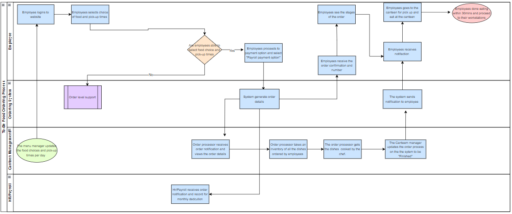

This was one of the main projects i worked on that involved developing a comprehensive business case that addressed the company's operational challenges affecting its employees' satisfaction and productivity in workplace and leading to legal disputes.
After conducting a comprehensive Gap Analysis to identify discrepancies between the existing system and desired system, identifying bottlenecks, inefficiencies and proposing effective solutions resulted in a notable 60% increase in employees'productivity and satisfaction.


This project involved me developing a comprehensive dashboard used to address the company's operational challenges and provide actionable insights. As a result of the comprehensive analysis of the raw data set using Power BI, some recommedations were given which led to increase in sales by 10% and effective customer satisfaction with reduced cost.

As a result of analysis the current state of Jumia two processes, I mapped out the AS-IS state of the processes using the Flowchart and Swimlane which provided the visulization of the two processes and uncover valuable insights of identifying the problems and loopholes. As a result of analysing the needs and requirements of the stakeholders, I mapped out the Future state(TO-BE) using both the Flowchart, Swimlane and various UML. This led to increase in customer satisfaction and increase in sales by 25% in that year.

This company's need was to track its performce using its KPIs and identifying high value customer overtime. I developed a comprehensive system that met the company's needs and aided informed decisions.